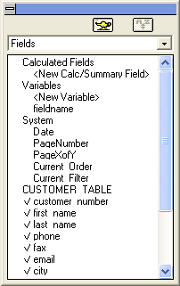

Working with a Browse in Design Mode
Changing the Browse's Dimensions
To change the height or width of a browse:
Select either the bottom or right edge of the browse.
Stretch the browse window to the desired size.
To remove a field:
Click a column heading to highlight it.
Press DELETE.
The field is no longer displayed.
To add a field to a Browse:
Drag the field from the <span class=Screen>Drag and Drop List</span> and drop it into the browse.

Browse Drag-and-Drop List
See Also
Using the Browse Editor, Changing the Browse Appearance, Resizing Columns and Rows, Rearranging Columns